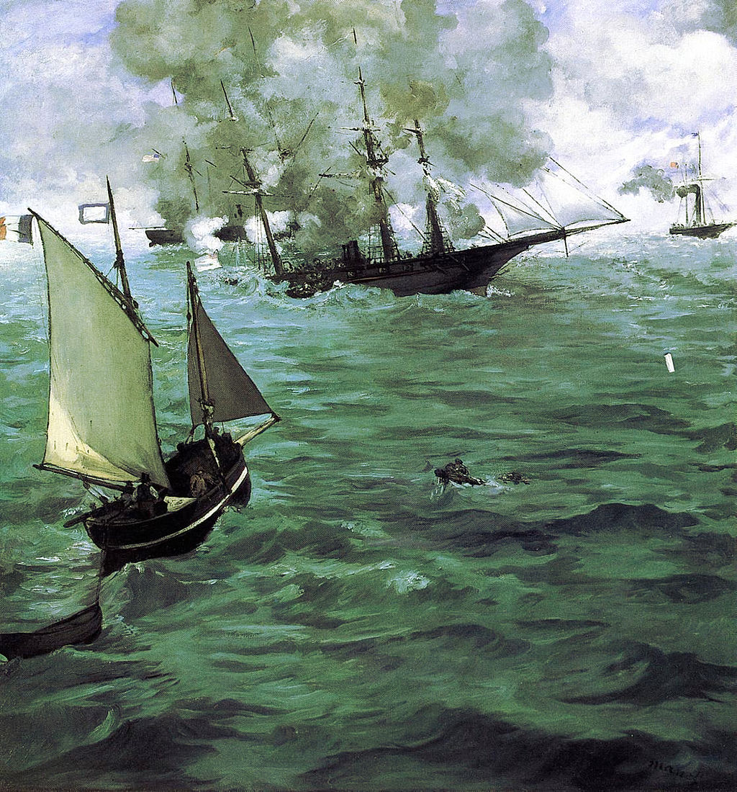

<head>
<meta charset="UTF-8" />
<meta name="keywords" content="drawing, painting" />
<meta name="description" content="drawings by Sunjy" />
<title>Sunjy</title>
<link rel="shortcut icon" type="image/x-icon" href="../../mImages/mCommon/favicon.ico" media="screen" />
<link rel="stylesheet" type="text/css" href="../../mCsses/mCommon/mCssA.css" />
<link rel="stylesheet" type="text/css" href="../../mCsses/mCommon/mCssB.css" />
<link rel="stylesheet" type="text/css" href="../../mCsses/mCommon/mCssC.css" />
<link rel="stylesheet" type="text/css" href="../../mCsses/mCommon/mCssD.css" />
<link rel="stylesheet" type="text/css" href="../../mCsses/mContent/mCssA.css" />
<link rel="stylesheet" type="text/css" href="../../mCsses/mContent/mCssB.css" />
<link rel="stylesheet" type="text/css" href="../../mCsses/mContent/mCssC.css" />
<link rel="stylesheet" type="text/css" href="../../mCsses/mContent/mCssD.css" />
</head>
<script type="text/javascript" src="../../mScripts/mContent/mContentAA.js" /></script>
<script type="text/javascript" src="../../mScripts/mContent/mContentAB.js" /></script>
<script type="text/javascript" src="../../mScripts/mContent/mContentAC.js" /></script>
<script type="text/javascript" src="../../mScripts/mContent/mContentAD.js" /></script>
<script type="text/javascript"></script> 
<script type="text/javascript">
document.write('<div class="mImgAbsolute"></div>');
/*
document.write('<p class="mFontSizeBColor" />From a white paper...</p>');
document.write('<table class="center"><tr><td>');
document.write('');
document.write('</td></tr></table>');
*/
</script>


<script type="text/javascript">
document.write('<p class="mFontSizeBColor" />The Battle of the Kearsarge and the Alabama</p>');
document.write('<p class="mFontSizeSColor" />“The Battle of the Kearsarge and the Alabama” by Édouard Manet commemorates the Battle of Cherbourg of 1864, which was a naval engagement of the American Civil War.<br><br>The naval battle was between the Union cruiser USS Kearsarge and the Confederate raider CSS Alabama. Many spectators were able to see the action from the coast of France and saw the USS Kearsarge sink CSS Alabama.<br><br>Within one month of this battle, Manet had completed this painting, even though he had not witnessed the action himself. Manet relied on press descriptions of the battle and visits to Cherbourg to see the Kearsarge and compose this artwork. <br><br>This painting was the first known seascape by Manet with his imaginative depiction of the naval battle fought off the coast of France. The C.S.S. Alabama, the scourge of Union shipping, is shown sinking by her stern.<br><br>Smoke is rising from a direct hit to C.S.S. Alabama’s engines by the U.S.S. Kearsarge, which is mostly obscured from view by the smoke clouds.<br><br>This picture was first displayed in the window of a print shop in Paris in July 1864, a month after the event, demonstrating Manet’s quick response to a sensational and recent news story.<br><br>The Battle of Cherbourg (1864)<br><br>The Battle of Cherbourg was a single-ship action fought between a United States Navy warship, USS Kearsarge, and a Confederate States Navy warship, CSS Alabama, in 1864, off Cherbourg, France.<br><br>After several successful commerce raiding missions in the Atlantic Ocean, the CSS Alabama turned into Cherbourg Harbor on June 11, 1864.<br><br>The Captain intended to drydock his ship and conduct repairs at the French port. The Confederate Navy vessel was crewed by about 170 men and armed with six 32-pounder (15 kg) cannon.<br><br>The CSS Alabama was pursued for two years by the screw sloop-of-war USS Kearsarge. Kearsarge was armed with two 11-inch (279 mm) smoothbore Dahlgren guns. Around 150 sailors and officers operated her.<br><br>On June 14, Kearsarge finally caught up with Alabama as she was receiving repairs. Kearsarge did not attack, as Alabama was in a neutral port; instead, she blockaded the CSS Alabama in Cherbourg.<br><br>On June 19, CSS Alabama, with nowhere else to go, she exited the harbor to attack Kearsarge. She was escorted by the French Navy ironclad Couronne, whose mission was to ensure that the ensuing battle occurred outside the French port.<br><br>The Kearsarge turned around to take the impending battle out of French territorial waters. Once outside national water, the USS Kearsarge turned about again and lined up for a broadside. <br><br>CSS Alabama fired the first shots with little impact. The Kearsarge closed to within 1,000 yards (910 m) when she fired her first shot. The two warships maneuvered on different courses throughout the battle.<br><br>Both Captains attempted to cross each other’s bow, hoping to inflict heavy raking fire. The battle continued in this manner for under about an hour. In the meantime, on the French coast, hundreds of people gathered to watch the fight.<br><br>Kearsarge’s armor cladding sustained two hits during the engagement. The gunnery of USS Kearsarge was more accurate than that of the Confederates.<br><br>Eventually, after just over an hour of exchanging artillery fire, CSS Alabama received shot-holes beneath the waterline and began to sink.<br><br>The USS Kearsarge continued firing until a white flag was seen, raised by one of the Confederate sailors with his hand. <br><br>During the battle, forty Confederate sailors were casualties with 19 killed. Three men were wounded aboard the United States’ vessel, one of whom died the following day.<br><br>During the rescue by multiple craft, the Deerhound, a British yacht, instead of delivering the rescued Confederates to Kearsarge as captives, they set a course for Southampton, thus enabling the Confederate Captain and some of the crew to escape.<br><br>The USS Kearsarge’s crew begged their Captain to allow them to open fire on the British yacht. The Union captain would not allow this, so the Confederates got away and avoided imprisonment. <br></p>');
document.write('<table class="center" /><tr><td>');
document.write('<br>The naval battle was between the Union cruiser USS Kearsarge and the Confederate raider CSS Alabama. Many spectators were able to see the action from the coast of France and saw the USS Kearsarge sink CSS Alabama.<br><br>Within one month of this battle, Manet had completed this painting, even though he had not witnessed the action himself. Manet relied on press descriptions of the battle and visits to Cherbourg to see the Kearsarge and compose this artwork. <br><br>This painting was the first known seascape by Manet with his imaginative depiction of the naval battle fought off the coast of France. The C.S.S. Alabama, the scourge of Union shipping, is shown sinking by her stern.<br><br>Smoke is rising from a direct hit to C.S.S. Alabama’s engines by the U.S.S. Kearsarge, which is mostly obscured from view by the smoke clouds.<br><br>This picture was first displayed in the window of a print shop in Paris in July 1864, a month after the event, demonstrating Manet’s quick response to a sensational and recent news story.<br><br>The Battle of Cherbourg (1864)<br><br>The Battle of Cherbourg was a single-ship action fought between a United States Navy warship, USS Kearsarge, and a Confederate States Navy warship, CSS Alabama, in 1864, off Cherbourg, France.<br><br>After several successful commerce raiding missions in the Atlantic Ocean, the CSS Alabama turned into Cherbourg Harbor on June 11, 1864.<br><br>The Captain intended to drydock his ship and conduct repairs at the French port. The Confederate Navy vessel was crewed by about 170 men and armed with six 32-pounder (15 kg) cannon.<br><br>The CSS Alabama was pursued for two years by the screw sloop-of-war USS Kearsarge. Kearsarge was armed with two 11-inch (279 mm) smoothbore Dahlgren guns. Around 150 sailors and officers operated her.<br><br>On June 14, Kearsarge finally caught up with Alabama as she was receiving repairs. Kearsarge did not attack, as Alabama was in a neutral port; instead, she blockaded the CSS Alabama in Cherbourg.<br><br>On June 19, CSS Alabama, with nowhere else to go, she exited the harbor to attack Kearsarge. She was escorted by the French Navy ironclad Couronne, whose mission was to ensure that the ensuing battle occurred outside the French port.<br><br>The Kearsarge turned around to take the impending battle out of French territorial waters. Once outside national water, the USS Kearsarge turned about again and lined up for a broadside. <br><br>CSS Alabama fired the first shots with little impact. The Kearsarge closed to within 1,000 yards (910 m) when she fired her first shot. The two warships maneuvered on different courses throughout the battle.<br><br>Both Captains attempted to cross each other’s bow, hoping to inflict heavy raking fire. The battle continued in this manner for under about an hour. In the meantime, on the French coast, hundreds of people gathered to watch the fight.<br><br>Kearsarge’s armor cladding sustained two hits during the engagement. The gunnery of USS Kearsarge was more accurate than that of the Confederates.<br><br>Eventually, after just over an hour of exchanging artillery fire, CSS Alabama received shot-holes beneath the waterline and began to sink.<br><br>The USS Kearsarge continued firing until a white flag was seen, raised by one of the Confederate sailors with his hand. <br><br>During the battle, forty Confederate sailors were casualties with 19 killed. Three men were wounded aboard the United States’ vessel, one of whom died the following day.<br><br>During the rescue by multiple craft, the Deerhound, a British yacht, instead of delivering the rescued Confederates to Kearsarge as captives, they set a course for Southampton, thus enabling the Confederate Captain and some of the crew to escape.<br><br>The USS Kearsarge’s crew begged their Captain to allow them to open fire on the British yacht. The Union captain would not allow this, so the Confederates got away and avoided imprisonment. <br>" />');
document.write('</td></tr></table>');
</script>


